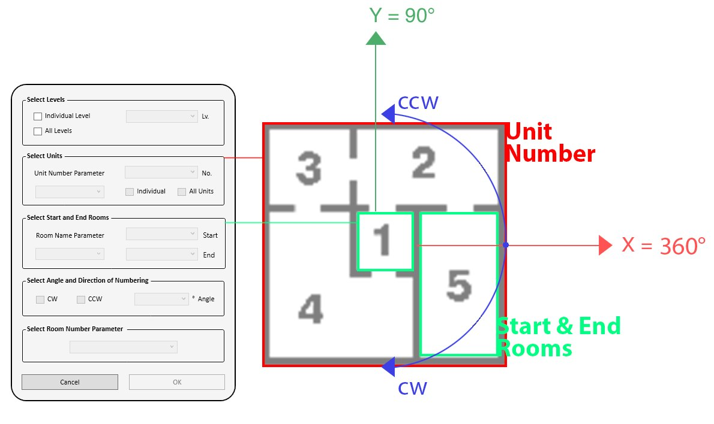

RoomNumbering
Rooms numbered in a logical sequence, unit by unit

Room numbers should follow a logical order in every unit, which gets tedious across a whole building. This add-in sorts each unit's rooms by their angle around a start room, clockwise or counter-clockwise from a chosen base angle, then writes the numbers into the parameter you pick. It runs for a single unit on a single level, or all units on all levels at once. Every dropdown fills from the parameters actually on the rooms, so it works with a project's own naming.
The numbering logic

From the tool's documentation: the dialog on the left, and on the right rooms numbered around start room 1 to end room 5, with the base angle and direction.
How it works
Design decisions
Geometry, not manual orderThe sequence comes from room positions, so every unit follows the same logic.
Fits any projectDropdowns read the parameters actually on the rooms.